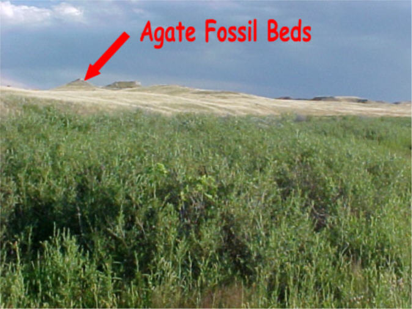

| Evolution in the News - March 2006 |
| by Do-While Jones |
"There's a lot of bad information out there about fossilization," says Skulan. "If you look at the modern descriptions of fossilization, they're the same as the ones included in the 1795 Encyclopedia Britannica." Only in the past decade or so have people begun to study in detail what happens to organisms after death, he adds. 1
This qualifies for Evolution in the News because it appeared in the January 28, 2006, issue of Science News, but it is more like history than news. If you have read any creationist literature, you will already know all of this. If, however, you have been protected from the truth by the evolutionists' censorship of the public school science curriculum, this might take you by surprise. Here is a typical tale about fossilization, as told by an evolutionist:
|
Phase 1 - Death Having died, the ammonite slowly sinks to the sea floor. Scavengers feed on the fleshy body of the creature, and after only several weeks all that remains is the shell. Phase 2 - Deposition Several months after death the shell gradually becomes covered with silt and sand. These layers continue to build, providing a shield around the shell and protecting it from damage. Time continues to pass and more and more layers are deposited. After a few hundred years the shell is several feet beneath the surface. Time continues to pass, 1,000 years, 10,000 years and more... [ellipsis in the original] Phase 3 - Permineralization Gradually the chemicals in the shell undergo a series of changes. As the shell slowly decays, water infused with minerals passes through it, replacing the chemicals in the shell with rock-like minerals (Calcite, Iron or Silica). This process is scientifically known as 'permineralization'. Over millions of years the original shell is completely replaced by the minerals and what remains is a rock-like copy of the original shell. The fossil has the same shape as the original object, but is actually rock. This process also results in loss of original colour. 2 |
There are lots of variations on this tale, but the common theme is that the critter dies in a tranquil body of water, sinks to the bottom, and is slowly buried. Then, over a very long period of time, minerals replace the organic material, resulting in a rock shaped like the living creature.
If you went to public school, and heard this tale over an over, you probably believe that this story is true. Apparently it has been received wisdom since its publication in the 1795 Encyclopedia Britannica. That's why you might be shocked by the recent Science News cover story titled, "First Steps--Modern science investigates the initial stages of how fossils form."
|
Mystery underlies the fossilization not just of birds but of most animals. Some teams of scientists are now using lab and field tests to investigate how postmortem processes affect animal tissues of various types and sizes, from crustacean embryos to elderly rhinos. In doing so, they're gaining insights into the fossilization process. That information may lead to more-accurate interpretations of the fossil record and reveal new views of ancient creatures and their environments. 3 [emphasis supplied] |
That last sentence is very important. A misunderstanding of how fossils form will lead to an incorrect interpretation of when, where, and how the fossilized creatures lived and died.
Were you taught in school that "mystery underlies fossilization"? Weren't you taught the traditional fable, as if it were cast in stone?
|
Most carcasses that harden into fossils, including those of birds, were deposited in a body of water and then buried by sediment, says David A. Krauss, a paleobiologist at City University of New York. However, the irksome fact that dead birds float conflicts with this observation. In fact, bird carcasses float for quite a while, according to the results of experiments conducted by Krauss and his colleagues. The researchers reported their findings last October at a meeting of the Society of Vertebrate Paleontology in Mesa, Ariz. In their tests, conducted outdoors during the summer, Krauss and his colleagues placed carcasses of doves, swallows, and blackbirds in tanks filled with water. Every one of the dozen birds floated. By the end of the third day, a thick film of bacteria had formed on the carcasses. Soon thereafter, the birds' remains became infested with bugs and maggots. Over the next 3 to 4 weeks, the carcasses decayed, lost some feathers, and began to fall apart--but they still floated. Only after decomposition breached the birds' internal air sacs and permitted water to flow into those cavities did the body parts finally sink, says Krauss. At that point, the remains certainly wouldn't have made informative fossils. 4 |
Usually, evolutionists don't let facts get in the way of a good story. Creationists have long argued that dead birds and fish float. They don't sink peacefully to the bottom and get covered with silt. Even the Mafia knows that "cement shoes" are needed to make sure a fink "sleeps with the fishes." But evolutionists have long maintained that dead things sink to the bottom and are covered with silt, despite observations to the contrary. Now, at last, they are admitting that the creationists were right.
So, how do things get covered with mud if dead things naturally float?
|
After some experimentation, the researchers found a way to overcome a dead bird's buoyancy. When a carcass was dropped onto moist sediments that contained clay, the material soaked into the bird's feathers and bound the body to the mud in just a few minutes. Later, when water was added to the tank, the stuck-in-the-mud carcass remained submerged. 5 |
They are right, of course, but they carefully avoid stating the obvious. Birds don't normally wallow in the mud. How do the birds get so muddy before death? Clearly, they must have died in a hurricane or very strong rain storm. They got blown out of the sky, or blown out of a tree, and smashed into something, killing them or rendering them unconscious. Then they were blown along the muddy ground. The rain washed the mud-soaked dead birds into a stream or river, and they were covered with muddy water.
|
Taking their work even further, Krauss and his team added enough sediment to the tanks to bury the submerged carcasses. Then, they placed weights on the mud to increase the pressure, as a naturally buried body would experience if accumulating lake sediments gradually covered it. The team left the bodies in place for 3 years. When the researchers unearthed their samples, they found that the patterns and extent of preservation of the faux-fossil birds were remarkably similar to those seen in actual fossils millions of years old. This resemblance suggests that the remains of ancient birds might have begun their process of fossilization in just such a way, Krauss notes. The team's findings may enable scientists to better interpret fossils and deduce the environments in which they formed, he adds. 6 |
Why would the sediment have to cover the body gradually? The scientists added the sediment all at once. Could that not have happened naturally? Ask the people in New Orleans how long it takes sediment to accumulate on the living room floor. [This was written shortly after a hurricane hit New Orleans.] That wasn't a gradual process. Besides, if the sediments had covered the birds slowly, they probably would have decayed much more than if the sediments covered the birds rapidly.
Notice that they only left the bodies in the ground 3 years, but they were already starting to look a lot like "million-year-old" fossils.
There were other experiments as well.
|
Only in one set of environmental conditions--that in which many European lobster eggs were buried in sediment--did eggs acquire a complete coating of minerals. However, some tests with apparently identical environmental conditions failed to produce mineralized eggs, [Derek E.G.] Briggs [a paleontologist at Yale University] notes. Even within a single vial, effects sometimes weren't consistent: Some eggs had patches of minerals on their exteriors, while others ended up with none. Briggs and his colleagues report their findings in the December 2005 Palaios. Although the details about what triggered the mineralization of eggs remain elusive, the tests show the important role that oxygen depletion and low pH play in the process, says Briggs. In some cases, the coating was visible after just 2 weeks. Most tests lasted no more than a couple of months, but several ran for 10 months or more. Even after that period, mineralization showed only on the eggs' outer surfaces, not within them. Mineralization of an egg's contents must take longer than the experiments had run, says Briggs. However, the team's findings suggest that eggs can remain intact in sediments at least a year, if not longer. In essence, fossilization is a race between the processes of mineralization and decay, he notes. 7 [emphasis supplied] |
You've probably read creationist claims of hats or fence posts that fossilized in just a few years. Creationists generally claim that the proper conditions, not long periods of time, are all that are needed for fossilization. That's what Briggs' experiment showed. Briggs doesn't know exactly what the proper conditions are, but some eggs mineralized, and some didn't, despite being buried for the same amount of time. Furthermore, the durations of the tests were very short, geologically speaking. It took just weeks or months for the process to begin. If they had more patience, they would have seen more mineralization (in those situations where the conditions were favorable).
The most important conclusion is probably that fossilization has to happen quickly, or it won't happen at all because, "fossilization is a race between the processes of mineralization and decay." If something doesn't fossilize quickly, it will decay.
|
If a buried bone lasts 10 years, most of the things that can happen to it have already happened. 8 |
This admission of the truth is refreshing, if somewhat late. We generally don't quote creationists because they might not have any credibility with our target audience. But we can't help pointing out that the landmark creationist book, The Genesis Flood by Whitcomb and Morris, was published in 1961. Starting on page 156 of this book, there is a six-page discussion of how things fossilize. It includes a quote from Velikovsky's Earth in Upheaval, which was published in 1955. They debunked the traditional evolutionary fable of how fossils form, and defended the rapid burial and fossilization "discovered" by modern science late last year. So, creationists have published for 51 years what modern evolutionists have just discovered.
Even so, there are still things that evolutionists have not yet discovered. Last summer I visited the Agate Fossil Beds National Monument in Nebraska and the Mammoth Site near Hot Springs, South Dakota. In each of these cases, the official party line is that these places were watering holes. Animals came down to them, got stuck in the mud, and were fossilized. Although that is a plausible explanation for what happened at the La Brea Tar Pits in Los Angeles, it just doesn't seem plausible for the two places I visited.

Consider this picture I took on the trail from the Agate Fossil Beds visitor's center to the fossil beds themselves. This was the low point of the trail. I was standing on a wooden bridge that crosses a shallow stream. The fossil beds are near the top of the hill in the distance. As you can see, it is the highest point for many miles around.
The Mammoth Site is inside a building, so it isn't as clearly on top of a hill, but one does definitely walk uphill from the parking area to enter the building.
Water holes aren't typically found on the top of a hill. If these places weren't water holes, why would a concentration of animals be buried in the mud there? Could they have been seeking high ground? Isn't it much more reasonable to think they could have been seeking shelter from a local flood--or perhaps a much larger one?
Evolutionists know that Nebraska was once under water. How long will it take them to figure out these critters died on a hilltop and not at a waterhole? As Perkins said, "That information may lead to more-accurate interpretations of the fossil record and reveal new views of ancient creatures and their environments." 9
| Quick links to | |
|---|---|
| Science Against Evolution Home Page |
Back issues of Disclosure (our newsletter) |
| Web Site of the Month |
Topical Index |
Footnotes:
1
Perkins, Science News, Jan. 28, 2006, Vol. 169, No. 4, "First Steps", pages 56-57, https://www.sciencenews.org/article/first-steps
(Ev)
2
http://www.discoveringfossils.co.uk/Whatisafossil.htm
(Ev)
3
Perkins, Science News, Jan. 28, 2006, Vol. 169, No. 4, "First Steps", pages 56-57, https://www.sciencenews.org/article/first-steps
(Ev)
4
ibid.
5
ibid.
6
ibid.
7
ibid.
8
ibid.
9
ibid.